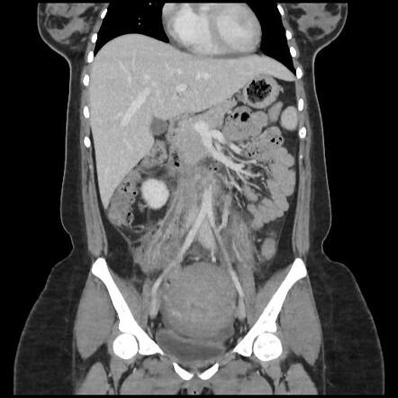

Página 5 · A cascata da falha
A febre não cede: a cascata da falha
O reflexo errado
Endometrite tratada com Clindamicina + Gentamicina e a febre não cede. O reflexo que quase todo mundo tem — e que está errado — é trocar o antibiótico. Parece intuitivo ("o antibiótico não funcionou, troco por um mais forte"), mas é a armadilha. Na endometrite que não responde, o problema geralmente não é o espectro do antibiótico; é que já existe outra coisa acontecendo que o antibiótico sozinho não resolve.
O gatilho: +48h de febre
O gatilho para escalar é temporal: a febre persistiu por mais 48 horas após o início do tratamento. Não é "trocar no primeiro dia sem melhora" — é dar ao esquema o tempo dele e, mantida a febre por mais 48 horas, mudar de estratégia. E mudar de estratégia aqui não significa mudar de antibiótico.
O primeiro passo certo: imagem procurando abscesso
O primeiro passo certo é exame de imagem — ultrassonografia ou tomografia de pelve — procurando abscesso. A endometrite que não responde ao antibiótico pode já ter evoluído para abscesso, e abscesso não se resolve só com antibiótico: precisa ser drenado/tratado. Por isso a imagem vem antes de qualquer troca de droga: você está procurando um foco que exige outra conduta.
Se achar abscesso
Achou abscesso na imagem: o abscesso é tratado (drenagem/abordagem do foco), sem abandonar o antibiótico. O achado explica a febre refratária e muda a conduta de "só antibiótico" para "antibiótico + resolver a coleção".
Se a imagem exclui abscesso: pense tromboflebite
Se a ultrassonografia exclui abscesso, o próximo degrau é pensar em tromboflebite pélvica séptica. O mecanismo: pela infecção, formou-se um trombo — um coágulo em veia pélvica/ovariana, semeado pela infecção, que mantém a febre.
Interativo: toque no trombo.
A fisiopatologia que a foto não conta: um trombo semeado pela infecção numa veia ovariana/pélvica mantém a febre. É por isso que a heparina funciona — anticoagula o trombo, e a febre melhora. A heparina se acrescenta ao antibiótico; não o substitui.Tromboflebite pélvica séptica é diagnóstico de exclusão
A tromboflebite pélvica séptica é um diagnóstico de exclusão. Você chega nela depois de descartar o abscesso — não de saída. É o degrau que sobra quando a imagem não mostrou coleção e a febre persiste.
Não há exame que confirme
Um detalhe que a banca explora: não existe um exame espetacular que confirme a tromboflebite pélvica séptica. Não há aquele teste que "crava" o diagnóstico. Por isso ele é de exclusão — você raciocina por eliminação, não por um laudo que bate o carimbo.
A conduta: acrescenta heparina, não para o antibiótico ⚠️
A conduta é a pegadinha central: ACRESCENTA heparina, SEM parar o antibiótico. Não substitui — soma. O antibiótico continua tratando a infecção; a heparina entra por causa do trombo. Quem lê rápido troca o antibiótico pela heparina; o certo é manter os dois.
A prova terapêutica
E por que acrescentar a heparina fecha o raciocínio? Porque funciona como prova terapêutica: se realmente for tromboflebite pélvica séptica, a heparina faz a febre melhorar. A resposta à anticoagulação, num quadro sem outro foco, confirma retrospectivamente o diagnóstico que nenhum exame cravou.

TC coronal com contraste: o útero ainda aumentado pelo puerpério e, nos trajetos das veias ovarianas, estruturas tubulares com parede realçada e material hipodenso intraluminal — o trombo. O achado não é "líquido livre" nem espessamento inespecífico: é a falha de enchimento dentro de uma veia dilatada. O principal confundível é o abscesso pélvico (coleção arredondada, parede espessa, septos) — aqui o padrão é vascular e acompanha o trajeto venoso.
Case courtesy of Ammar Haouimi, Radiopaedia.org, rID 225672 — CC BY-NC-SA 3.0
Quiz — fixação
Endometrite tratada com Clindamicina + Gentamicina há mais de 48h, e a febre persiste. Qual a conduta correta?
- B) Correta. O primeiro degrau é imagem procurando abscesso — a febre refratária costuma esconder um foco (coleção) que o antibiótico sozinho não resolve. Investiga-se a causa antes de mexer na droga.
- A) É exatamente o reflexo errado que a página desmonta. Na maioria das vezes o espectro está adequado; o problema é foco não drenado ou trombo. "Não melhorou = antibiótico fraco" é a armadilha.
- C) Dois erros: heparina antes de excluir abscesso (pula o degrau da imagem) e suspender o antibiótico (a heparina acrescenta, não substitui).
- D) Febre puerperal refratária é internação e investigação ativa, não alta. Subestima a gravidade de uma endometrite que não responde.
Julgue as afirmativas sobre a tromboflebite pélvica séptica e marque a sequência correta (V/F): I. É diagnóstico de exclusão, considerado após afastar abscesso. II. Existe exame de imagem específico que a confirma com certeza. III. A conduta é acrescentar heparina, mantendo o antibiótico.
- A) V – F – V. I é verdadeira: chega-se a ela por eliminação, depois que a imagem excluiu a coleção. II é falsa: não há exame que "crave" — por isso é de exclusão; a TC ajuda a ver o trombo, mas o diagnóstico é clínico. III é verdadeira: acrescenta heparina sem parar o antibiótico — soma, não troca.
- B) Erra a II ao afirmar que existe o laudo salvador — é justamente o que não existe.
- C) Erra a I ao negar que seja diagnóstico de exclusão.
- D) Erra a III ao suspender o antibiótico — cai de novo na conduta invertida.
Fechado o eixo genital, a mesma puérpera pode ter a mama doendo — e aí muda o território inteiro: a régua da mama separa o leite empedrado da primeira semana da mastite da terceira.